Posez le sac. L'étape est prête.
24 chambres aux murs de pierre volcanique, une table de tradition et un garage fermé pour la nuit, à cinq minutes de la gare du Puy-en-Velay.
Hôtel ** · Logis Hôtels · ouvert de 7 h à 23 h · on parle français, español et English
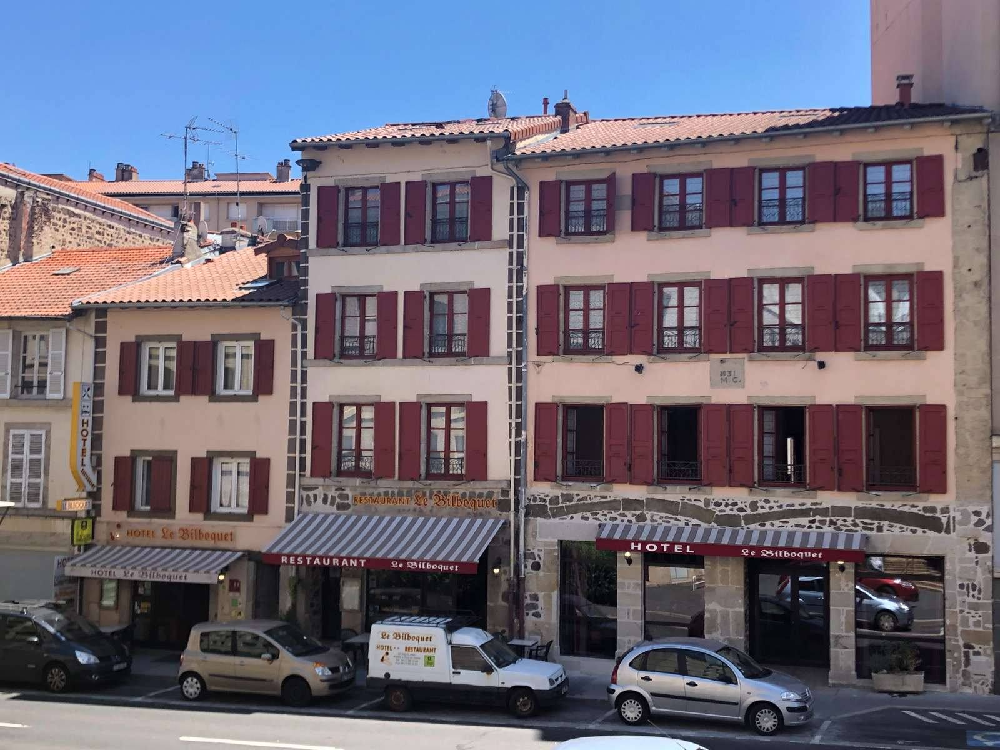
Le bilboquet de l'enseigne : touchez-leUne étape, du sac posé au sac repris.
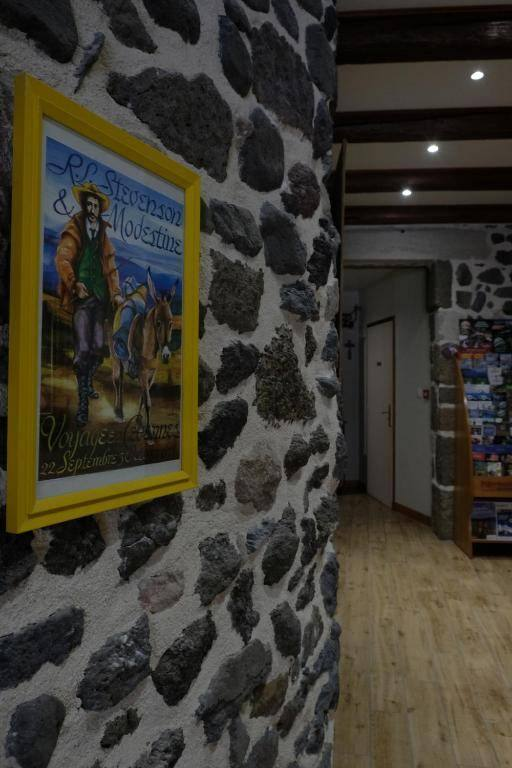
La soirée-étape, tout compris.
La chambre, le dîner et le petit-déjeuner pour un seul prix. Pensée pour les pèlerins du chemin de Saint-Jacques et pour les commerciaux de passage.
Soirée-étape
98 €chambre singleChambre, dîner et petit-déjeuner, toute l'année.
Demi-pension
70 €par personne, en chambre double79 € par personne du 1er avril au 30 septembre. Chambre, dîner et petit-déjeuner.
Panier repas
15 €Le déjeuner du lendemain, prêt au départ, pour la prochaine étape.
Garage individuel fermé
8 €la nuit · 40 € la semaineLaissez la voiture à l'abri le temps de votre marche. Une place en parking fermé est aussi possible.
24 chambres, murs de pierre volcanique.
Rustiques par les murs, modernes pour le confort. Certaines, côté cour, ont un balcon au calme.
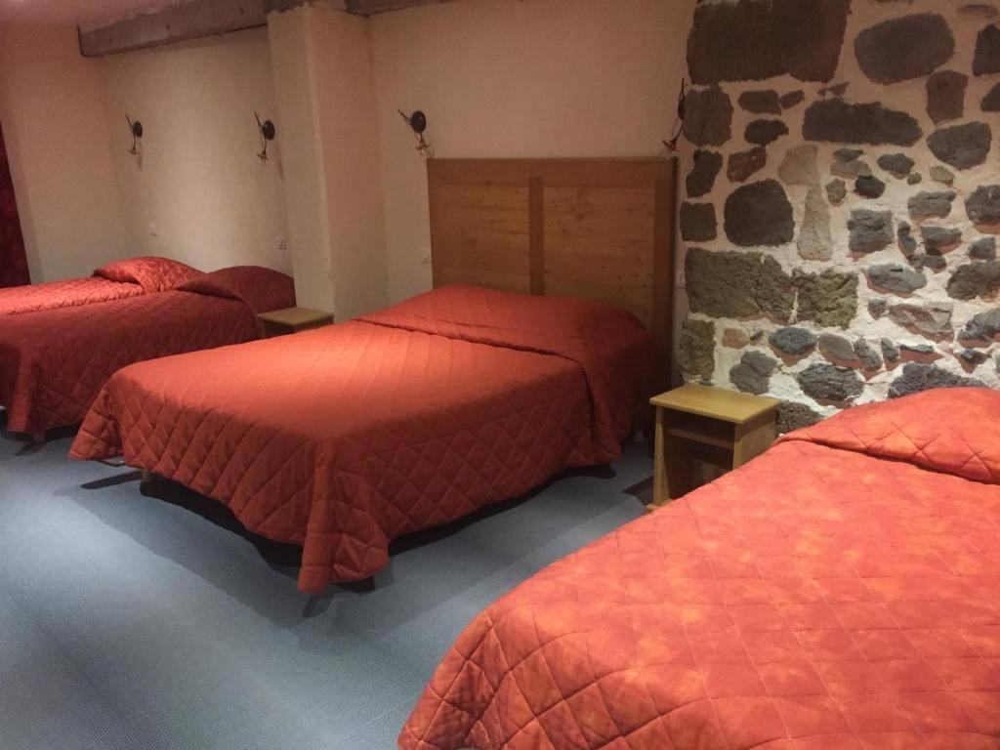
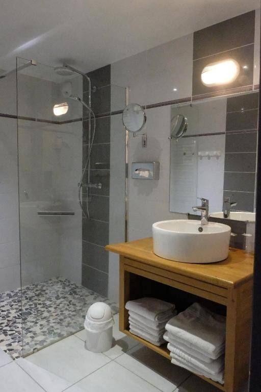
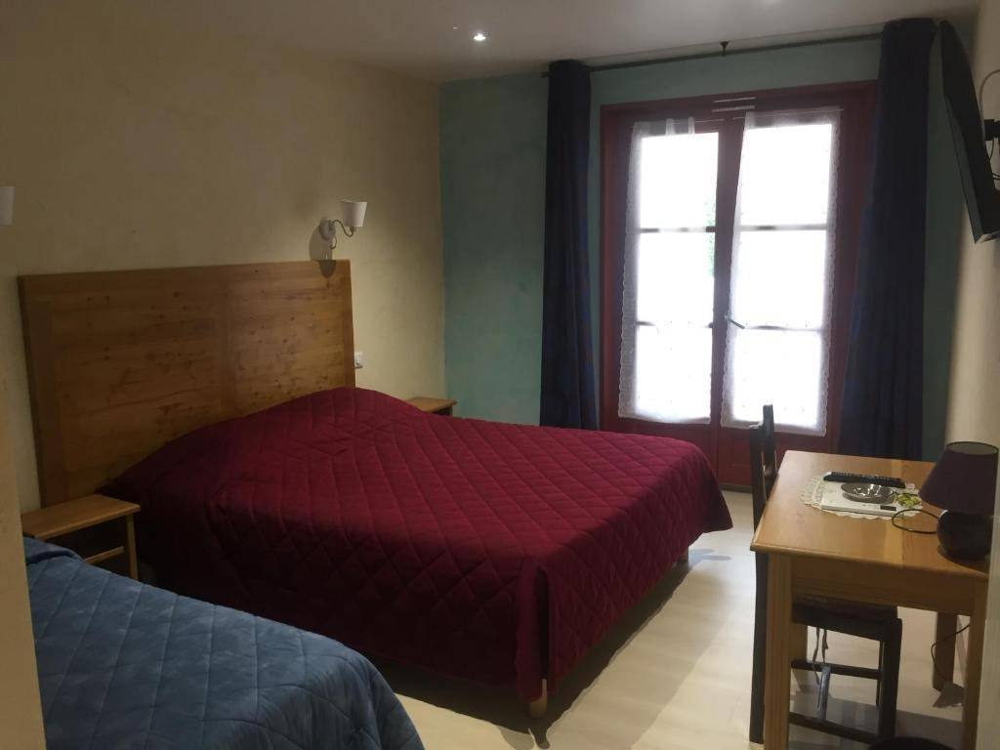
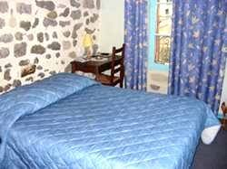
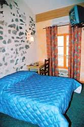
Du 1er octobre au 31 mars.
- Baignoire ou douche à l'italienne
- Climatisation dans les chambres
- Wi-Fi gratuit et sécurisé, un émetteur par étage
- Télévision écran plat, TNT, Canal+ et Canal satellite
- Téléphone, sèche-cheveux, miroir grossissant
- Balcon côté cour, au calme, pour certaines
- Animaux acceptés, avec supplément
- Chambres prêtes à 15 h, libérées à 11 h
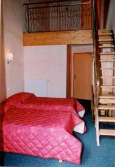
En famille. Des chambres avec mezzanine pour 4 ou 5 personnes, et au restaurant un menu enfant avec de quoi colorier.
Pierre de pays, poutres et cuir rouge : l'accueil du Bilboquet.
Une table de pays, contre le mur de pierre.
Une cuisine traditionnelle qui met en avant les produits du Velay : lentille verte du Puy, verveine… Le soir, fondue ou raclette sur réservation.
- Déjeuner
- 12 h – 14 h
- Dîner
- 19 h 30 – 21 h 30
- Fondue, raclette
- 25 € par personne, sur réservation, sauf le dimanche
- Allergènes
- La liste est à votre disposition
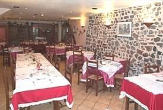
Au départ du chemin de Saint-Jacques.
Le Puy-en-Velay, ville mariale au sud-est du Massif central, est le point de départ du pèlerinage vers Compostelle. Un site à part, à dix minutes à pied de l'hôtel.
- La cathédrale, inscrite au patrimoine mondial de l'Unesco
- Son cloître du XIIe siècle
- La statue Notre-Dame de France
- Le rocher de la chapelle Saint-Michel
Le Puy, c'est aussi :
- sa dentelle
- sa lentille verte
- sa verveine, liqueur digestive
L'hôtel est partenaire des Carnets de Voyage de Poche, les guides des chemins de Compostelle.
En savoir plus sur la ville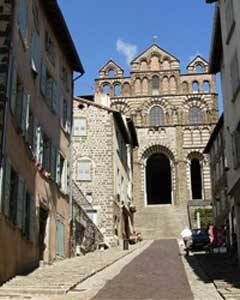
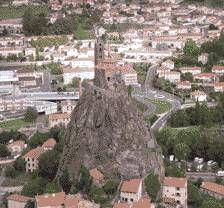
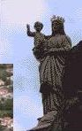
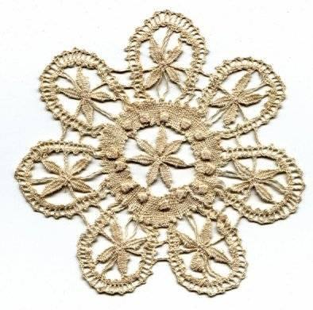
Préparer mon étape.
Indiquez vos dates et votre formule : l'hôtel vous confirme la disponibilité par e-mail ou par téléphone.
Vous pouvez aussi réserver par téléphone au 04 71 09 74 24, par fax au 04 71 02 70 51, par e-mail à lebilboquet@club-internet.fr, par la centrale de réservation Logis ou par Booking.com.
Faubourg Saint-Jean, à l'entrée de la ville.
À cinq minutes de la gare et à dix minutes du centre. Se garer dans la rue est facile ; un parking fermé et des garages individuels sont aussi proposés.
- Adresse
- 52, faubourg Saint-Jean
43000 Le Puy-en-Velay - Téléphone
- 04 71 09 74 24
- Fax
- 04 71 02 70 51
- lebilboquet@club-internet.fr
- Ouverture
- Tous les jours, de 7 h à 23 h
- Langues parlées
- Français, espagnol, anglais
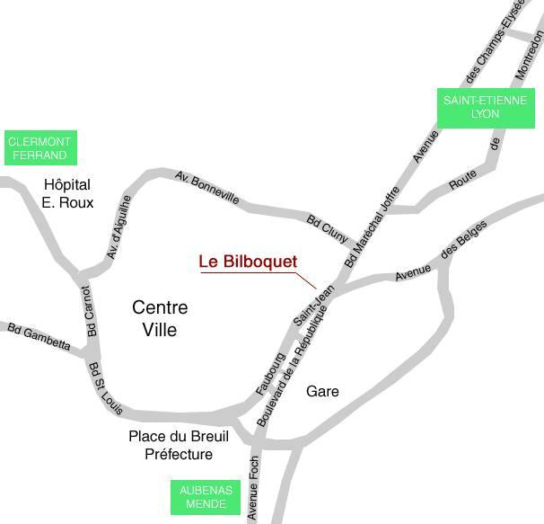
En voiture, depuis Clermont-Ferrand, Saint-Étienne et Lyon, ou Aubenas et Mende : l'hôtel est entre le centre-ville et la gare.